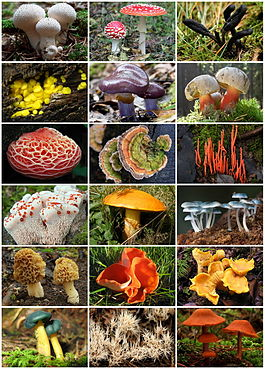

Грибы́ (лат. Fungi или Mycota) — царство живой природы, объединяющее эукариотические организмы, сочетающие в себе некоторые признаки как растений, так и животных. Грибы изучает наука микология, которая считается разделом ботаники, поскольку ранее грибы относили к царству растений. Понятие о грибах как об отдельном царстве сформировалось в науке к 1970-м годам, хотя выделить это царство предлагал ещё Э. Фрис в 1831 году, а Карл Линней высказывал сомнения, размещая грибы в царстве растений в своей «Системе природы». Во второй половине XX века окончательно сформировалось и представление о полифилетизме грибов. К концу XX века были накоплены данные по генетике, цитологии и биохимии, позволившие разделить эту группу организмов на несколько не родственных между собой ветвей и распределить их между различными царствами, оставив в царстве «настоящих», или собственно грибов, только одну из них. Таким образом, к началу XXI века научный термин «грибы» стал неоднозначным. В узком смысле, с точки зрения биологической систематики, грибы — таксон, одно из царств живой природы. В старом же, более широком смысле, термин потерял значение таксона и обозначает эколого-трофическую группу, объединяющую гетеротрофных эукариот с осмотрофным типом питания. Такие организмы по традиции продолжает изучать микология. Весьма велико биологическое и экологическое разнообразие грибов. Это одна из наибольших и разнообразнейших групп живых организмов, ставшая неотъемлемой частью всех водных и наземных экосистем. В соответствии с современными оценками, на Земле существует от 100 до 250 тысяч, а по некоторым оценкам до 1,5 миллионов видов грибов. По состоянию на 2010 год в царстве Fungi описано 36 классов, 140 порядков, 560 семейств, 8283 употребляемых родовых названий и 5100 родовой синоним, 97 860 видов. Роль грибов в природе и в хозяйстве человека трудно переоценить. Грибы присутствуют во всех биологических нишах — в воде и на суше, в почве и на всевозможных иных субстратах. Являясь редуцентами, они играют важную роль в экологии всей биосферы, разлагая всевозможные органические материалы и способствуя образованию плодородных почв. Велика роль грибов как участников взаимовыгодных симбиотических (мутуалистических) сообществ. Известны симбиотические отношения грибов с высшими растениями — микориза, с водорослями и цианобактериями — лишайники, с насекомыми, представители порядка неокаллимастиговых — обязательный компонент пищеварительной системы жвачных и некоторых других травоядных млекопитающих, они играют важную роль в переваривании растительной пищи. Многие виды грибов активно используются человеком в пищевых, хозяйственных и медицинских целях. Блюда из съедобных грибов традиционно входят в национальные кухни многих народов мира. Во многих странах развито промышленное выращивание съедобных грибов, производство материалов для грибоводов-любителей. Микроскопические грибы используются в пищевой промышленности для приготовления напитков способом брожения, ферментации различных пищевых продуктов. Грибы — один из важнейших объектов биотехнологии, применяемых для производства антибиотиков и других лекарственных средств, некоторых химических веществ, используемых в пищевой промышленности и в технических целях. С другой стороны, грибы могут наносить и значительный вред. Фитопатогенные грибы, в ненарушенных природных экосистемах обычно не наносящие вреда, могут вызывать эпифитотии в сельскохозяйственных посадках (агроценозах), древесных насаждениях и в лесах, где ведётся хозяйственная деятельность. У животных и человека грибы вызывают кожные заболевания (дерматомикозы), а иногда и поражения внутренних органов (глубокие микозы). Очень опасны и могут приводить к смертельному исходу отравления ядовитыми грибами, а также микотоксикозы — отравления пищевыми продуктами, заражёнными токсинами микроскопических грибов. Значительный ущерб причиняет вызываемая грибами порча различных продуктов и материалов (биокоррозия).